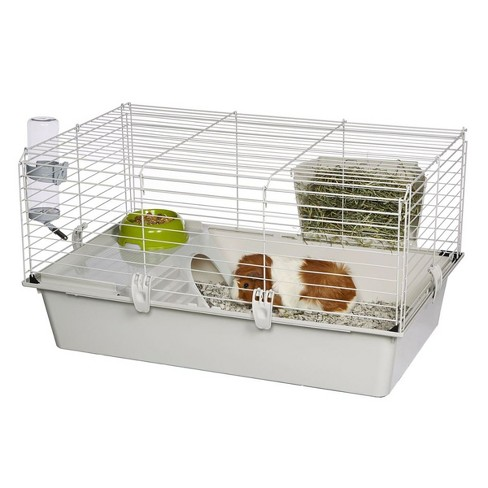
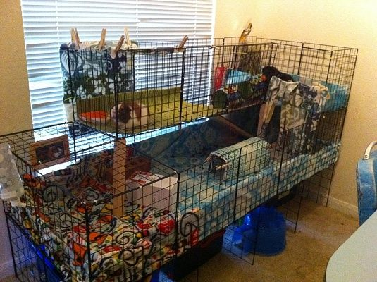

Care
A Few Notes on Care
Caring for floofballs requires a little bit of effort, not an outstanding degree of it. I'll list some important factors here without going into too much depth, and then point you to some resources for your further investigation (and as a good, responsible guinea pig owner, I know you will be doing further investigations :D).
Cages
Don't even think about buying one of those small, metal cages you see at the store. Even for one pig, that is not
enough space.
Putting a pig in a cage like that would be like putting you in a janitor's closet for the rest of your
life. Do you want to
live in a janitor's closet? Didn't think so.
Pigs need space to run around so they can live happy lives. To prance with glee amongst plentitudes of strewn hay
and poop pellets. Do not deny them this joy.
BAD cage:

Good cages have a lot of space (with hiding places for guinea pigs to run to if they feel threatened).
These cages can come in many different forms that you can either build yourself or buy prebuilt.
Here's an example of a GREAT cage:

Here's a video on how to build a great C&C (Cubes and Coroplast) cage (for about $40), similar to what you see
in the image above (YouTube channel: Scotty's Animals):
Diet
What a guinea pig eats is very important! Eating too much or too little of what they require can cause sickness in
these little furballs.
Guinea pig diets should consist of water, timothy hay, timothy-hay based pellets, fresh fruits, and fresh
vegetables.
Good quality hay should be their staple food. Pellets come second to that, and fruits and vegetables should be
served
in moderation per this nutrition
chart.
Preserved treats and snacks should generally be avoided, as they can contain ingredients that may be harmful to a
guinea
pig's health!
A video on good diet practices (YouTube Channel: Erin's Ark):
A video on preserved treats and snacks (YouTube Channel: PetiteCavy):
Social Environment
Furball Friends for Your Furball
Piggles are social animals. That said, they should have piggle friends to live and play with. Imagine if you had
no
humans to interact with and only an alien overlord to talk to. That might get weird. So do your guinea pig a
favor,
and get them another guinea pig (or pigs)!
Look at these guinea pigs just hanging out (YouTube Channel: It's Pigs!):
Non-furball Friends for Your Furball
That means you. You can be a friend to your guinea pig. That means respecting it as an autonomous living creature
and
not treating it like Elmyra from Tiny Toon
Adventures
does her pets.
Once and only once you're buddy-buddy and your guinea pig actually likes you a lot, may you commence with the
cuddling.
Before that happens, you can talk to the little squeaker, feed it, and get it used to you holding it. More on
taming
your
guinea pig in the following video (YouTube Channel: Scotty's Animals):
Playtime
Imagine that you had to stay inside of your room ALL the time. It would feel like prison right? Well, if you don't
want your guinea pigs to feel like prisoners, you should let them out to PLAY.
Could just be inside a
room,
could be in a small enclosure within the room, could even be outside in the grass (just be wary of other animals
(including birds) that might prey on your guinea pigs). As long as they get some time outside of their cage to run
around, you can ensure yourself a happy furball. 10-20 minutes a day should do!